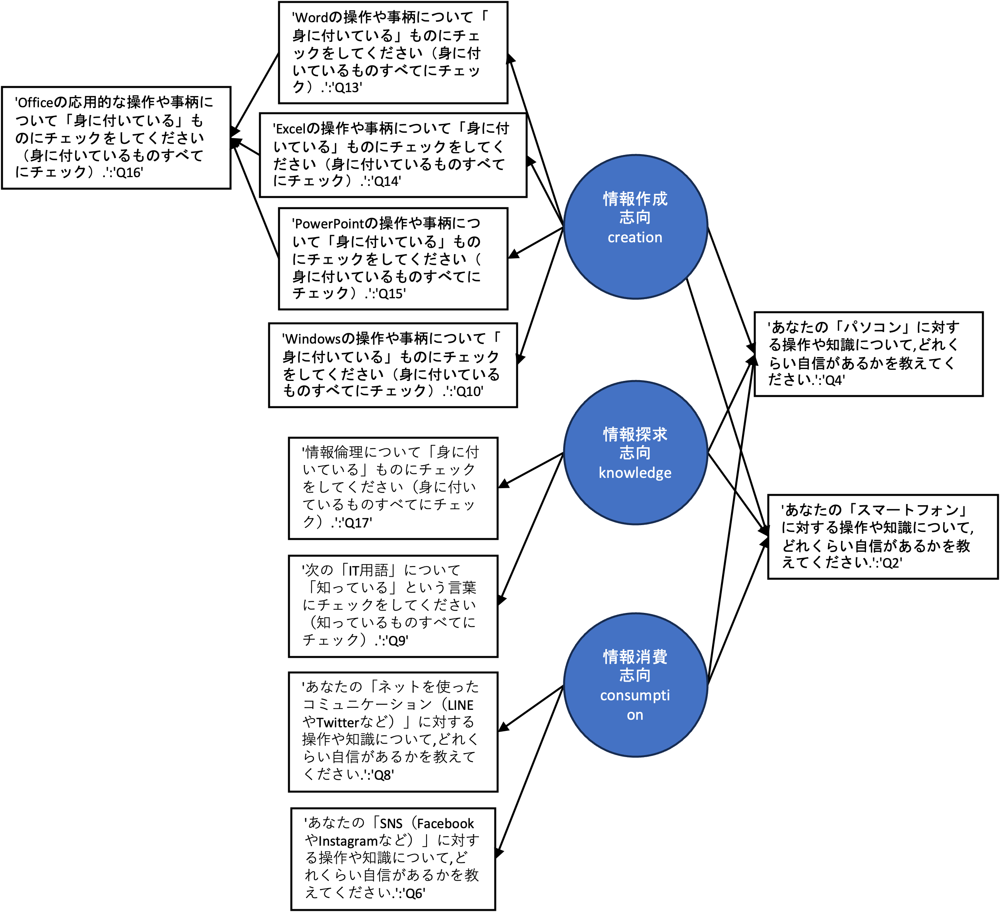

特別講義DS Ch16 カテゴリーデータ処理
本章は,カテゴリーデータの処理手法に関するまとめの章となります. 学生の研究ではアンケートデータが非常によく利用されますが, アンケートでは5段階評価などの質問項目がよく利用されるため,得られたデータの大部分がカテゴリーデータとなります. この章では,アンケートデータを事例に,よく行われる分析手法をいくつか紹介・実践してみます. なお,本稿で紹介される手法は既にほかの章で説明されているものも含まれており, 内容の重複があります.
1 質問紙調査
本章はアンケート調査,質問紙調査によって集められるデータを分析するための事例を紹介することを目的としています. 質問紙調査によるデータの収集は,質問紙の設計や,倫理的な課題などにおいて留意すべき課題がいくつもあります. 本講義では学生自身が,データを収集することになるので,まずはそれらの内容に関して学習してみましょう. なお,本節の内容は, 教育・心理分野がご専門の江草遼平先生に監修いただきましたが,資料に含まれる誤りは筆者の責任に依るものです.
1.1 社会的態度の操作的な定義
質問紙調査を行う研究では,人の行動を説明・予測するための概念として,人の行動の背後に社会的態度があると仮定します. 社会的態度とはオールポートの定義によれば,
- 経験によって構築された心理・神経生理的な準備状態
- 人が関わる対象に対する行動を,方向づけたり変えたりするもの
とされています.
これらの態度は直接観察することができません.そこで,態度の測定には,行動の測定を行い類推する手法を用います.
1.2 心理尺度(Psychological scale)
実際の行動を測定するのには実験環境,参加者などの制約があり難しいことがあります.そこで,心理尺度による測定方法がよく用いられます.心理尺度とは態度に関する質問によって行動を測るもので,普段目にするアンケートで用いられている手法がそれに当たります(英語で検索する際には”Questionnaire”や”Scale”のキーワードを含めるとヒットしやすい).
厳密な心理尺度の構成は,それだけで1つの研究となるものです.「心理尺度を使って何かを明らかにしたい」が目的の場合には,可能であれば先行研究から心理尺度を援用して用いるか,そこに1つ2つ測定可能な指標を持ち込んで,それについて分析するのが望ましいです.例えば,共に先行研究がある”自尊感情の評価”と”大学生の恋愛観”の関係,あるいは”自尊感情の評価”と容易に測定可能な”100ます計算でケアレスミスが何回起こるか”の関係などが挙げられます.
既存の尺度を援用する際には,ものによって使用料金や著者の許諾を必要とする場合があるので,これらのチェックを忘れないようにする必要があります.
心理尺度における質問手法にはいくつかの種類がありますが,ここでは代表的なものを2つ見てみましょう.
リッカート法 (Likert scale method)
リッカート法は質問項目について「とても当てはまる」,「やや当てはまる」,「どちらとも言えない」,「ほとんど当てはまらない」,「全く当てはまらない」などの段階化された回答を得る手法です.
各回答の間は等間隔とは限らず,測定が粗いため同じことについて複数の質問を集めることで測定誤差を小さくすることを試みます.
例えば,「授業における英語への関心」を測定するために,「分からないときでも英語を聞こうとする」,「分からないときでも英語を読もうとする」,「英語で話すのが楽しい」など複数の項目を立てます.
リッカート法で得られたデータは厳密には順序尺度にあたりますが,心理学分野では便宜的に間隔尺度として扱うことがあります.これは,複数の項目の得点の合計や平均点を用いるための処置ですが,他分野からは批判もあるので,その後の統計検定手法の選択などには注意する必要があります.
SD法(Semantic Differential Scale Method)
SD法は,文章での質問ではなく形容詞対を用いる方法です.例えば,ステンレスのコップを見たときの印象について,「温かい」-「冷たい」,「硬い」-「柔らかい」といった項目のどちらにより近いかを5段階,7段階の尺度で尋ねます.SD法は感情や印象に関する評価に向いており,デザインやサービスなどの評価によく用いられます.
SD法は適当な形容詞対をリストアップするのに苦労があるので,リッカート法と比べると作成が難しいですが,質問紙では異なる文章を用いる必要がありそうな複数の対象でも,同じ質問紙で評価ができる場合があり,比較が容易になるメリットがあります.
1.3 因子(潜在変数)
ある態度を説明する際に,複数の側面を必要とする場合があります.例えば,対人認知(人に対する印象,ある人が好ましいかどうか)に関する研究ではRosenberg et al.(1968)が,対人的な印象を形成する認知次元として社会的望ましさと知的望ましさの2次元を見出しています.
この説に基づけば,対人認知の傾向を問うアンケートを行うには「社会的望ましさ」と「知的望ましさ」のどちらか一方でなく,2つの次元を持つ尺度が望ましいこととなります. このような概念構成の構造を知るには,構成する因子（上の例でいえば２つの望ましさ）を探索する必要があります. そのような複数の変数の中から少数の次元を探索する分析手法として因子分析があります. 10項目の7段階であるリッカート尺度によるアンケートがあったとしたとき,このアンケートの10個の項目がすべて1つのことについて測定しているのであれば,ある項目への回答が中間の「４：どちらでもない」であったとき,ほかの回答も「４：どちらでもない」かそれに近い回答が選ばれる傾向がみられるはずです.そうなっていないなら,その質問は他のことについて尋ねている可能性が高いとみなされます. アンケートの10個の項目が複数の次元について訊ねるものであるとき,いくつかの項目がほかの項目とは関係なく,まとまって高く反応する,反対に低く反応するなどのケースが見受けられます.このまとまった項目が共通して持つ部分を因子とみなします.
因子分析では直接観測できる質問項目（下位尺度）への反応から,直接観測できない「食べ物への態度」を構成する因子を測定し,それによって全体の概念を説明します. 各質問項目が因子につながる共通の部分を持っているかどうかは,質問項目間の相関係数から求められます. 質問項目によっては,2つ以上の因子にかかわることがあります.例えば,わさびが寿司につきものであるなら,多少は辛い物への態度が影響している可能性が考えられます.このようなケースでは,下位尺度のグループ化において,相関係数をもとに判断をする必要があります.
質問項目には,尺度の全体に関わる部分があります.これを共通性といい,逆に,尺度に関わらない質問項目独自の要素を独自性と呼びます. 例えば寿司が好きという行動は尺度全体における「食べ物への態度」と高く関わっているかもしれません.この場合にはこれが共通性とみなされます. しかし寿司が好きな人の中には「形がかわいいから好き」など食べ物に直接かかわらない要素があるかもしれません. このような時,寿司が好きかという質問項目には独自性があるといえます. 共通性と独自性は足して１になるようになっており,共通性があまりに低い項目がある場合は共通因子を探るのに役に立たないことがあります.このような場合,その質問項目を除外して考えることもあります. 一方で,そのような質問項目から新しい因子が作成されたり,回答者グループの属性に影響を受けているなど,データ全体の解釈において有用である場合もあるので慎重に考える必要であります
- 項目が持つ共通性（青）と独自性（白）
- 寿司のほうがより尺度全体への共通性が高いイメージ
各項目が因子から受ける影響の強さを因子負荷量と呼び,これが大きい項目が因子を解釈する際の中心となります.
この授業では因子分析自体は扱わず,共分散構造分析を扱いますが,これらの概念は解釈に必要なので忘れたら戻ってきてください.
信頼性と妥当性
尺度は態度を測るためのものさしにあたるものです.よって,測るたびに大きく数値が変わったり,対象を図るのに十分な長さがないとなれば役に立ちません.
そのような尺度の有用度を判断する基準として信頼性があります.信頼性は,尺度の測定誤差について吟味することです.一貫性の測定として,クロンバッハのα係数がよく用いられますが,ここでは深く扱いません. 興味のある方は調べてみる,教員に質問してみましょう.
作成者の意図通りに尺度を測定できているかを表す妥当性という概念もよく利用されます.妥当性の判断としては,より詳細には基準関連妥当性,内容的妥当性,構成概念妥当性を吟味することが求められますが,こちらも詳細は割愛します.
1.4 質問紙の構成
1.4.1 測りたい態度について設定する
質問紙を構成する目的は,ある態度について類推することができる行動を計測することです.したがって,まずその態度について明良化する必要があります.
例えば「人の一生」のような巨大すぎる概念を対象にするのは相当無理があります.「寝起き時の感情について」だとより限定されていて望ましいですが,例えば少年と老人,日本人と外国人では大きく異なるかもしれません.これらを比較することも一つの研究テーマとして面白いですが,まずは手におえる範囲までそれを訊ねる対象と扱う概念について小さくすることをおすすめします.
このようなときに重要なのは先行研究です.これまで研究されてこなかった概念を１から作るにしても,類似の研究について追試するにあたっても,先行研究から大きなヒントを得ることが近道となります. 先行研究の調べ方に関しては,講義で別の機会に扱いますので,参考にして先行研究を集めてみましょう.
1.4.2 概念の構造を考える
概念を構成する下位概念とについて,事前にイメージすることも重要です.これらは,アンケートを回収した結果修正を要することもありますが,ひとまず質問項目をまんべんなくそろえるために重要なステップです.
概念の構造には多様な種類がありますが,やはり先行研究から自分の知りたい概念についてどのような構造が適当であるかを吟味する必要があります.
1.4.3 項目の作成
心理尺度の項で先駆けてリッカート法とSD法については示しています.これらの方法は得点化して計算することを考慮したものですが,それ以外の方法でもデータを補強したり,集めることができます. いくつかの方法に関して概観してみましょう.
順位法
順位法は提示された選択肢に順位をつけさせるものです.例えば,「カレー,ラーメン,とんかつの３つについて好きな順番をつけてください」のような質問項目が考えられます.この方法では,順序尺度のデータを得ることができます.
多肢選択法
多肢選択法は質問項目について,複数の回答選択をさせるものです.「以下の中から,好きな授業名を１つ選べ」という質問では1つしか回答が得られませんが,「好きなだけ選べ」とすれば複数の情報が手に入ります.十分に設計された選択肢があれば傾向を得ることができます.
自由記述法
自由記述法は質問に対して,自由に文章を書かせる方法です.構造化されたデータを手に入れることができないが,見逃していた要素,想像もしていない要素が情報として得られる可能性があります.カテゴリー分類や自然言語処理によって解釈に寄与するデータを得ることができるかもしれません. 自然言語処理に関しては他の章で扱っていますので,参考にしてください.
項目作成の際の注意
いずれの方法でも,質問項目の作成においては以下の点に注意を払う必要があります. それぞれの詳細に関しては,実際に質問紙を構成する中で,個別に解説しますので,必要に応じて対応していきましょう.
１）項目が適切に構成概念を反映していること
２）項目がわかりやすいこと
３）回答を誘導しないこと
４）項目数が適切であること
５）選択肢が適切であること
６）逆転項目をいれるかどうか
７）回答者に社会通念上許されない負担を与えないこと
2 利用データ
本章では,仮想のアンケートデータとして,情報入門で利用されている理解度アンケートを利用します. なお,こちらのアンケートの質問形式は実際に利用しているものですが, 解答に関して仮想のものであり,得られた結果も実際の講義とは無関係であることに注意して下さい.
データはこちらからダウンロードできます.
こちらのデータは,Microsoft Formsで取得したアンケートデータになります. 自由回答や量的データを回答する質問項目はなく, 5段階の順序尺度及び複数選択式の質問項目からなります.
質問項目は以下の通りです.
- あなたの「スマートフォン」に対する印象について、どれくらいあてはまるかを教えてください。
- あなたの「スマートフォン」に対する操作や知識について、どれくらい自信があるかを教えてください。
- あなたの「パソコン」に対する印象について、どれくらいあてはまるかを教えてください。
- あなたの「パソコン」に対する操作や知識について、どれくらい自信があるかを教えてください。
- あなたの「SNS（FacebookやInstagramなど）」に対する印象について、どれくらいあてはまるかを教えてください。
- あなたの「SNS（FacebookやInstagramなど）」に対する操作や知識について、どれくらい自信があるかを教えてください。
- あなたの「ネットを使ったコミュニケーション（LINEやTwitterなど）」に対する印象について、どれくらいあてはまるかを教えてください。
- あなたの「ネットを使ったコミュニケーション（LINEやTwitterなど）」に対する操作や知識について、どれくらい自信があるかを教えてください。
- 次の「IT用語」について「知っている」という言葉にチェックをしてください（知っているものすべてにチェック）。
- Windowsの操作や事柄について「身に付いている」ものにチェックをしてください（身に付いているものすべてにチェック）。
- 電子メールの操作や事柄について「身に付いている」ものにチェックをしてください（身に付いているものすべてにチェック）。
- WWW(ウェブ)の操作や事柄について「身に付いている」ものにチェックをしてください（身に付いているものすべてにチェック）。
- Wordの操作や事柄について「身に付いている」ものにチェックをしてください（身に付いているものすべてにチェック）。
- Excelの操作や事柄について「身に付いている」ものにチェックをしてください（身に付いているものすべてにチェック）。
- PowerPointの操作や事柄について「身に付いている」ものにチェックをしてください（身に付いているものすべてにチェック）。
- Officeの応用的な操作や事柄について「身に付いている」ものにチェックをしてください（身に付いているものすべてにチェック）。
- 情報倫理について「身に付いている」ものにチェックをしてください（身に付いているものすべてにチェック）。’
3 データ処理
Microsoft Formsによるデータは,複数選択可能な質問項目への解答が一つのセルに｢;｣を用いて区切られて記入されるなど特徴があります.
分析の際には,これらの情報を利用しやすいように変形する必要があります. ここでは,練習も兼ねて一通りの処理を体験してみましょう.
加工後のデータはこちらで配布しているので,内容を確認して自力でできると感じた方はこの節は飛ばしていただいて構いません.
まずはデータの形式を確認してみましょう.
import pandas as pd
import matplotlib.pyplot as plt
import japanize_matplotlib
import seaborn as sns
import scipy.stats as st
import numpy as np
#グラフの保存場所
dir_fig = './result/fig/'
#グラフの設定
plt.style.use('ggplot') #グラフスタイル
plt.rcParams['figure.figsize'] = [12, 9] #グラフサイズ
plt.rcParams['font.size'] = 14 #フォントサイズ
#------------------------------------------------------------------
#データの読み込み
#------------------------------------------------------------------
df = pd.read_csv('./data/questionnaire_sample_original.csv')
print(df.columns)
"""
Index(['あなたの「スマートフォン」に対する印象について、どれくらいあてはまるかを教えてください。',
'あなたの「スマートフォン」に対する操作や知識について、どれくらい自信があるかを教えてください。',
'あなたの「パソコン」に対する印象について、どれくらいあてはまるかを教えてください。',
'あなたの「パソコン」に対する操作や知識について、どれくらい自信があるかを教えてください。',
'あなたの「SNS（FacebookやInstagramなど）」に対する印象について、どれくらいあてはまるかを教えてください。',
'あなたの「SNS（FacebookやInstagramなど）」に対する操作や知識について、どれくらい自信があるかを教えてください。',
'あなたの「ネットを使ったコミュニケーション（LINEやTwitterなど）」に対する印象について、どれくらいあてはまるかを教えてください。',
'あなたの「ネットを使ったコミュニケーション（LINEやTwitterなど）」に対する操作や知識について、どれくらい自信があるかを教えてください。',
'次の「IT用語」について「知っている」という言葉にチェックをしてください（知っているものすべてにチェック）。',
'Windowsの操作や事柄について「身に付いている」ものにチェックをしてください（身に付いているものすべてにチェック）。',
'電子メールの操作や事柄について「身に付いている」ものにチェックをしてください（身に付いているものすべてにチェック）。',
'WWW(ウェブ)の操作や事柄について「身に付いている」ものにチェックをしてください（身に付いているものすべてにチェック）。',
'Wordの操作や事柄について「身に付いている」ものにチェックをしてください（身に付いているものすべてにチェック）。',
'Excelの操作や事柄について「身に付いている」ものにチェックをしてください（身に付いているものすべてにチェック）。',
'PowerPointの操作や事柄について「身に付いている」ものにチェックをしてください（身に付いているものすべてにチェック）。',
'Officeの応用的な操作や事柄について「身に付いている」ものにチェックをしてください（身に付いているものすべてにチェック）。',
'情報倫理について「身に付いている」ものにチェックをしてください（身に付いているものすべてにチェック）。'],
dtype='object')
"""このままでは列名が長すぎてプログラムが書きにくいので,列名を順にQ1~Q17の連番に変更します.
今回は辞書型で連番を作成するために,組み込み関数のenumerate()を利用しています.
new_columns = dict([(t,'Q'+str(n + 1))for (n,t) in enumerate(df.columns)])
"""
一つ一つ手書きすると以下のようになる.
new_columns = {'あなたの「スマートフォン」に対する印象について、どれくらいあてはまるかを教えてください。':'Q1'
,'あなたの「スマートフォン」に対する操作や知識について、どれくらい自信があるかを教えてください。':'Q2'
,'あなたの「パソコン」に対する印象について、どれくらいあてはまるかを教えてください。':'Q3'
,'あなたの「パソコン」に対する操作や知識について、どれくらい自信があるかを教えてください。':'Q4'
,'あなたの「SNS（FacebookやInstagramなど）」に対する印象について、どれくらいあてはまるかを教えてください。':'Q5'
,'あなたの「SNS（FacebookやInstagramなど）」に対する操作や知識について、どれくらい自信があるかを教えてください。':'Q6'
,'あなたの「ネットを使ったコミュニケーション（LINEやTwitterなど）」に対する印象について、どれくらいあてはまるかを教えてください。':'Q7'
,'あなたの「ネットを使ったコミュニケーション（LINEやTwitterなど）」に対する操作や知識について、どれくらい自信があるかを教えてください。':'Q8'
,'次の「IT用語」について「知っている」という言葉にチェックをしてください（知っているものすべてにチェック）。':'Q9'
,'Windowsの操作や事柄について「身に付いている」ものにチェックをしてください（身に付いているものすべてにチェック）。':'Q10'
,'電子メールの操作や事柄について「身に付いている」ものにチェックをしてください（身に付いているものすべてにチェック）。':'Q11'
,'WWW(ウェブ)の操作や事柄について「身に付いている」ものにチェックをしてください（身に付いているものすべてにチェック）。':'Q12'
,'Wordの操作や事柄について「身に付いている」ものにチェックをしてください（身に付いているものすべてにチェック）。':'Q13'
,'Excelの操作や事柄について「身に付いている」ものにチェックをしてください（身に付いているものすべてにチェック）。':'Q14'
,'PowerPointの操作や事柄について「身に付いている」ものにチェックをしてください（身に付いているものすべてにチェック）。':'Q15'
,'Officeの応用的な操作や事柄について「身に付いている」ものにチェックをしてください（身に付いているものすべてにチェック）。':'Q16'
,'情報倫理について「身に付いている」ものにチェックをしてください（身に付いているものすべてにチェック）。':'Q17'}
"""
print(new_columns)
"""
{'あなたの「スマートフォン」に対する印象について、どれくらいあてはまるかを教えてください。': 'Q1'
, 'あなたの「スマートフォン」に対する操作や知識について、どれくらい自信があるかを教えてください。': 'Q2'
, 'あなたの「パソコン」に対する印象について、どれくらいあてはまるかを教えてください。': 'Q3'
, 'あなたの「パソコン」に対する操作や知識について、どれくらい自信があるかを教えてください。': 'Q4'
, 'あなたの「SNS（FacebookやInstagramなど）」に対する印象について、どれくらいあてはまるかを教えてください。': 'Q5'
, 'あなたの「SNS（FacebookやInstagramなど）」に対する操作や知識について、どれくらい自信があるかを教えてください。': 'Q6'
, 'あなたの「ネットを使ったコミュニケーション（LINEやTwitterなど）」に対する印象について、どれくらいあてはまるかを教えてください。': 'Q7'
, 'あなたの「ネットを使ったコミュニケーション（LINEやTwitterなど）」に対する操作や知識について、どれくらい自信があるかを教えてください。': 'Q8'
, '次の「IT用語」について「知っている」という言葉にチェックをしてください（知っているものすべてにチェック）。': 'Q9'
, 'Windowsの操作や事柄について「身に付いている」ものにチェックをしてください（身に付いているものすべてにチェック）。': 'Q10'
, '電子メールの操作や事柄について「身に付いている」ものにチェックをしてください（身に付いているものすべてにチェック）。': 'Q11'
, 'WWW(ウェブ)の操作や事柄について「身に付いている」ものにチェックをしてください（身に付いているものすべてにチェック）。': 'Q12'
, 'Wordの操作や事柄について「身に付いている」ものにチェックをしてください（身に付いているものすべてにチェック）。': 'Q13'
, 'Excelの操作や事柄について「身に付いている」ものにチェックをしてください（身に付いているものすべてにチェック）。': 'Q14'
, 'PowerPointの操作や事柄について「身に付いている」ものにチェックをしてください（身に付いているものすべてにチェック）。': 'Q15'
, 'Officeの応用的な操作や事柄について「身に付いている」ものにチェックをしてください（身に付いているものすべてにチェック）。': 'Q16'
, '情報倫理について「身に付いている」ものにチェックをしてください（身に付いているものすべてにチェック）。': 'Q17'}
"""
df.rename(new_columns, inplace=True,axis='columns')
print(df)
"""
Q1 Q2 Q3 ... Q15 Q16 Q17
0 まあまあ興味がある どちらでもない どちらでもない ... スライドマスターを活用することができる;SmartArtを挿入することができる; 学内PCで作成したファイルを自宅のPCに持ち運べる; どれも身についていない;
1 すごく興味がある まあまあ自信がある すごく興味がある ... 新しいスライドを追加することができる; 学術的文章の規則を踏まえてレポートを作成できる; 学内PCでログアウトせずに帰る危険性を理解している;マルウェア（不正ソフト）について理解して...
2 すごく興味がある あまり自信がない まあまあ興味がある ... どれも身についていない; どれも身に付いていない; どれも身についていない;
3 どちらでもない あまり自信がない 全く興味がない ... 新しいスライドを追加することができる; どれも身に付いていない; 学内PCでログアウトせずに帰る危険性を理解している;
4 まあまあ興味がある まあまあ自信がある すごく興味がある ... 新しいスライドを追加することができる; どれも身に付いていない; どれも身についていない;
... ... ... ... ... ... ... ...
1347 まあまあ興味がある あまり自信がない まあまあ興味がある ... 新しいスライドを追加することができる;スライドにページ番号を挿入することができる;スライドマ... どれも身に付いていない; 学内PCでログアウトせずに帰る危険性を理解している;フィッシング詐欺について理解している;ウ...
1348 まあまあ興味がある あまり自信がない まあまあ興味がある ... 新しいスライドを追加することができる; どれも身に付いていない; 学内PCでログアウトせずに帰る危険性を理解している;
1349 まあまあ興味がある 全く自信がない 全く興味がない ... 新しいスライドを追加することができる; どれも身に付いていない; どれも身についていない;
1350 まあまあ興味がある まあまあ自信がある まあまあ興味がある ... アニメーション機能を使うことができる;新しいスライドを追加することができる; どれも身に付いていない; 学内PCでログアウトせずに帰る危険性を理解している;ウェブ上の画像に関する著作権について理解...
1351 まあまあ興味がある あまり自信がない まあまあ興味がある ... 新しいスライドを追加することができる;スライドにページ番号を挿入することができる; どれも身に付いていない; フィッシング詐欺について理解している;ウェブ上の画像に関する著作権について理解している;学内...
"""続いて,質問項目を利用しやすいように変換します. このアンケートでは,Q1~Q8では,ITに関連する事柄に関する興味の強さと自信を5段階評価で聞いています.そのままでも使えますが,後の処理のために整数に変換します.
もとの列も残して置くために,数値変換した列は QX_numの形で新しい列を作成しています.
kyomi = {'すごく興味がある':5
,'まあまあ興味がある':4
,'どちらでもない':3
,'あまり興味がない':2
,'全く興味がない':1}
zishin = {'すごく自信がある':5
,'まあまあ自信がある':4
,'どちらでもない':3
,'あまり自信がない':2
,'全く自信がない':1}
for i in [1,3,5,7]:
df['Q' + str(i) + '_num'] = df['Q' + str(i)].apply(lambda x : kyomi[x])
for i in [2,4,6,8]:
df['Q' + str(i) + '_num'] = df['Q' + str(i)].apply(lambda x : zishin[x])Q9~Q17では,身についているスキルを複数選択形式で尋ねています. 複数選択された項目は,セミコロン(;)で区切られています. 各質問項目で選択されたスキルの数に変換してみます.
#｢身についているもの｣の数の列を作る
#------------------------------------------------------------------
def to_list(x):
# ';'で区切ったリストにする
# 'どれも身についていない'がある場合は空の列を返す
xs = x.split(';')[0:-1]
if 'どれも身についていない' in xs:
return []
elif 'どれも知らない' in xs:
return []
else:
return xs
#テスト
print(df.at[100,'Q13'])
print(to_list(df.at[100,'Q13']))
# >>> フォントの種類やサイズを変更することができる;中央揃えや右揃えを設定することができる;
# >>> ['フォントの種類やサイズを変更することができる', '中央揃えや右揃えを設定することができる']
for i in range(9,18,1):
df['Q' + str(i) + '_num'] = df['Q' + str(i)].apply(lambda x : len(to_list(x)))
print(df['Q17_num'])
"""
0 0
1 3
2 0
3 1
4 0
..
1347 3
1348 1
1349 0
1350 2
1351 3
Name: Q17_num, Length: 1352, dtype: int64
"""
num_columns = ['Q' + str(x) + '_num' for x in range(1,18,1)]
print(num_columns)
"""
['Q1_num', 'Q2_num', 'Q3_num', 'Q4_num', 'Q5_num', 'Q6_num', 'Q7_num', 'Q8_num', 'Q9_num', 'Q10_num', 'Q11_num', 'Q12_num', 'Q13_num', 'Q14_num', 'Q15_num', 'Q16_num', 'Q17_num']
"""4 ヒストグラム
続いてデータ分析のファーストステップであるヒストグラムを作成して個別の質問項目ごとのデータの特徴をみてみましょう. ヒストグラムの作成方法などに関しては,データの可視化の章を参照して下さい.
#ヒストグラムを作る
#------------------------------------------------------------------
## Q1~Q6
fig, ax = plt.subplots(nrows = 6
,ncols = 1
,tight_layout=True)
for i in range(6):
col = 'Q' + str(i + 1) + '_num'
xs = df[col].value_counts().sort_index()
ax[i].bar(xs.index,xs.values, width = 1)
ax[i].set_title(col)
plt.savefig(dir_fig + 'Q1_6_histgram.png')
plt.close(fig)
##Q6~Q12
fig, ax = plt.subplots(nrows = 6
,ncols = 1
,tight_layout=True)
for i in range(6):
col = 'Q' + str(i + 6) + '_num'
xs = df[col].value_counts().sort_index()
ax[i].bar(xs.index,xs.values, width = 1)
ax[i].set_title(col)
plt.savefig(dir_fig + 'Q7_12_histgram.png')
plt.close(fig)
##Q13~Q17
fig, ax = plt.subplots(nrows = 5
,ncols = 1
,tight_layout=True)
for i in range(5):
col = 'Q' + str(i + 13) + '_num'
xs = df[col].value_counts().sort_index()
ax[i].bar(xs.index,xs.values, width = 1)
ax[i].set_title(col)
plt.savefig(dir_fig + 'Q13_17_histgram.png')
plt.close(fig)以下のようなグラフが最初に設定したグラフの保存場所 ./result/figに保存されているはずです.
ここでは,ヒストグラムの分析の仕方については細かく扱いませんが,多くの示唆が得られます.
5 相関係数
ヒストグラムで質問項目ごとのデータの特徴を把握したので,相関係数を求めて,データ間の関係性を可視化してみましょう. 今回のデータは順序尺度なので,スピアマンの順位相関係数を利用します. 相関に関する説明は,データの数値化に関する章を参照してください.
#順位相関係数を求める
#------------------------------------------------------------------
sns.heatmap(df[num_columns].corr(method='spearman')
,cmap=plt.get_cmap('bwr')
,vmax=1.0
,center =0
,vmin=-1.0
,xticklabels=1
,yticklabels=1
,linewidths=.5
,annot=True)
plt.title('spearman')
plt.xticks(rotation=45)
plt.savefig(dir_fig + 'spearman.png')
plt.close()以下のような相関係数のヒートマップが作成されます. 細かな分析は行いませんが,Q1~Q8までの興味関心に関する質問項目間,Q9~Q17のスキルに関する質問間の相関が強いことなどが視覚的に表現されています.
こちらの相関係数は,後に行う共分散構造分析(SEM)におけるモデル作成のためにも利用されます.
6 同時度数分布表
相関係数によって相関が高い質問項目の組み合わせがいくつか把握されましたがこれは質問項目全体の関係性です. 解釈を行うには,相関係数の高い質問項目の組み合わせごとに更に詳細に,どの回答とどの回答がどのような関係にあるのか,といった分析が必要になります. そのような,質的データに関してそのような分析に利用できるのが同時度数分布表です. 詳細は,可視化の章を参照して下さい.
#クロス表
#------------------------------------------------------------------
#質問項目の区分間にどのような関係があるのかを検定する
#今回はスマホの自信(Q2)と,PCの自信(Q4)だけ(自分の仮説に応じて色々ためす)
# 作業手順
## クロス表を作成する
## 独立性の検定(お互いに影響があるか)を検定する
## 検定が有意であれば,どの項目が具体的にどの項目に影響しているかを残渣分析で明らかにする.
#クロス表の作成
## 列と行に指定する質問項目
target_row = 'Q4'
target_col = 'Q2'
## 選択肢の順序(指定しないとデータの出てきた順になる)
order = {target_row:['すごく自信がある'
,'まあまあ自信がある'
,'どちらでもない'
,'あまり自信がない'
,'全く自信がない']
,target_col:['すごく自信がある'
,'まあまあ自信がある'
,'どちらでもない'
,'あまり自信がない'
,'全く自信がない']}
crosstab = pd.crosstab(df[target_row],df[target_col])
crosstab = crosstab.reindex(order[target_row],axis='index')
crosstab = crosstab.reindex(order[target_col],axis='columns')
sns.heatmap( crosstab
, cmap=plt.get_cmap('Reds')
, yticklabels=1
, xticklabels=1
, linewidths=.5
, annot=True)
plt.title('クロステーブル:' + target_row + '×' + target_col)
plt.xticks(rotation=70)
plt.savefig(dir_fig + 'cross_table_'+ target_row + '_' + target_col +'.png')
plt.close()作成された度数分布表を確認してみると,Q2とQ2の間に全体的に右肩下がりの関係性があること,それぞれの分布が分かります. 今回は一つの組み合わせについて注目してみましたが,様々な組み合わせについて分析してみましょう.
7 独立性の検定
同時度数分布表によって,質問項目間の細かな関係性が分析されましたが,実際に2つの変数間に関係があるとは判断できていません. そのような判断のためには,検定を行う必要がありますが, 質的データの場合にしばしば用いられるのが,独立性の検定(Χ二乗検定)です. 詳細は数値化の章を参照して下さい.
#独立性の検定
x2, p, dof, e = st.chi2_contingency(crosstab,correction=False)
print(p)
# >>> 2.2871064452593352e-84
if p <= 0.025:
print('有意')
else:
print('有意でない')
# >>> 有意8 残渣分析
2つの質問項目間に期待値に対する偏りがあることが分かりました. 偏りが確認された場合には, 相関係数の場合と同様に,質問項目のどの回答同士が偏っているのかを把握するためには残渣分析が利用できます. 詳細は数値化の章を参照して下さい.
#有意であれば,残渣分析を行う
##期待値表の計算
expect = pd.DataFrame(e)
expect.columns = crosstab.columns
expect.index = crosstab.index
#残渣の計算
residual = crosstab - expect
#標準化残渣の計算
col_sum = crosstab.sum()
row_sum = crosstab.transpose().sum()
total = col_sum.sum()
stdres = residual
for c in stdres.columns:
for r in stdres.index:
stdres.at[r,c] = stdres.at[r,c] \
/ np.sqrt( expect.at[r,c]
* (1 - col_sum[c] / total)
* (1 - row_sum[r] / total))
#ヒートマップの作成
sns.heatmap(stdres
,cmap=plt.get_cmap('bwr')
,vmax=1.96
,vmin=-1.96
,center=0
,xticklabels=1
,linewidths=.5
,annot=True)
plt.title('標準化残渣:'+ target_row + '×' + target_col)
plt.xticks(rotation=70)
plt.savefig(dir_fig + 'stdres_' + target_row + '_' + target_col + '.png')
plt.close()作成された標準化残渣を確認すると, 全体的に右肩下がりの偏りがあることが統計的に判断されました.
9 次元削減
これまでは一つ一つの質問項目及び質問項目間の関係に注目してきましたが, いくつかの質問項目をまとめてどのような関係があるのか,あるいは全体の質問をまとめてどのようなことが言えるのかという着眼点もあります. そのような場合に使える手法の一つが, 次元削減です. 次元削減は,多数の変数がある場合にいくつかの変数を要約した一つの合成変数を作成する手法になります.
例えば, 以下のような各科目の成績データを考えた場合に,個別の科目の成績を見ると,国語は高いが,数学は低い人と社会は高いが,英語は低い人のどちらが学力が高いのかというような判断は困難です.
| id | 国語 (x₁) | 英語 (x₂) | 社会 (x₃) | 物理 (x₄) | 化学 (x₅) | 数学 (x₆) |
|---|---|---|---|---|---|---|
| 1 | 78 | 80 | 49 | 76 | 70 | 35 |
| 2 | 66 | 90 | 68 | 47 | 60 | 55 |
| 3 | 55 | 89 | 90 | 88 | 82 | 78 |
| … | … | … | … | … | … | … |
そこで, 以下のように文系の科目をまとめた文系力やすべての科目を合成した総合学力のような変数を作成することで全体的な傾向が判断できます. \[ z_1 = \beta_{11}u_1 + \beta_{12}u_2 + \beta_{13}u_3 + \beta_{14}u_4 + \beta_{15}u_5 + \beta_{16}u_6 \implies 総合学力 \] \[ z_2 = \beta_{21}u_1 + \beta_{22}u_2 + \beta_{23}u_3 \implies 文系力 \] \[ z_3 = \beta_{34}u_4 + \beta_{35}u_5 + \beta_{36}u_6 \implies 理系力 \]
ここで,\(u_i\) は \(x_i\) を標準化したものです.
このようにそれぞれの点数をまとめて,要約した変数に変換することで,文系力が高いグループを文系に分類するなど全体的な解釈を行うことが可能になります. 変数の要約は,上の用に回帰式を用いて分析者が独自に設計することも可能ですが, まとめられる以前の情報の情報をできるだけ損なわずに自動的に合成変数を作成する次元削減手法を利用することが一般的です.
次元削減手法にはいくつかありますが,ここでは代表的な手法である主成分分析(Principle component analysis)を利用してみましょう.
- 主成分分析(PCA;Principle component analysis)
主成分分析は,多数の変数の持つ情報を損なわずに圧縮する技術(次数削減)であり,予測モデル構築の前処理としてもよく使われます. 主成分分析では,主成分の分散が最大になる軸(主成分)を探しその軸に直行する軸の中で分散が最大になる主成分を順に探していく手法です. 最も分散の大きい主成分を第1主成分,次に大きいものを第2主成分といい,以下順に数字が増えていきます.
通常は人間が把握できない多次元(多変数)を要約するために利用されますが,ここでは理解のために,二次元の場合のイメージを考えてみましょう.
第1主成分を軸としてみると,第2主成分の情報は失われますが,情報の損失が最も少なく2次元から1次元に情報を圧縮できます. これは,\([x,y]\)を\(\theta\)だけ回転させて,\([x,y][cos(\theta),sin(\theta)]^t\)を計算していることになります.
ここでは,アンケートデータの興味に関する質問Q1,Q3,Q5,Q7,自信に関する質問Q2,Q4,Q6,Q8,知識に関する質問Q9~Q17をそれぞれ要約して合成変数を作成してみます.
#次元削減
#------------------------------------------------------------------
#興味,自信,知識を統合して3変数にする
interest = df[['Q' + str(x) + '_num' for x in [1,3,5,7]]]
confidence = df[['Q' + str(x) + '_num' for x in [2,4,6,8]]]
knowledge = df[['Q' + str(x) + '_num' for x in range(9,18,1)]]
"""
#普通に平均値を出して,正規化するパターン
def min_max_scaling(x):
return (x - x.min())/(x.max() - x.min())
interest = min_max_scaling(interest.mean(axis=1))
confidence = min_max_scaling(confidence.mean(axis=1))
knowledge = min_max_scaling(knowledge.mean(axis=1))
print(interest)
"""
#PCAやt-sneでやってみるパターン(ただし,解釈が難しい)
from sklearn.decomposition import PCA
pca = PCA()
pca.fit(interest)
interest = pca.transform(interest)[:,0]
print('interest:', pca.explained_variance_ratio_[0])
pca.fit(confidence)
confidence = pca.transform(confidence)[:,0]
print('confidence:', pca.explained_variance_ratio_[0])
pca.fit(knowledge)
knowledge = pca.transform(knowledge)[:,0]
print('knowledge:', pca.explained_variance_ratio_[0])
#図示してみる
## interest-confidence
plt.scatter(y=interest,x=confidence)
plt.title('interest-confidence')
plt.ylabel('interest')
plt.xlabel('confidence')
plt.savefig(dir_fig + 'interest-confidence.png')
plt.close()
## interest-knowledge
plt.scatter(y=interest,x=knowledge)
plt.title('interest-knowledge')
plt.ylabel('interest')
plt.xlabel('knowledge')
plt.savefig(dir_fig + 'interest-knowledge.png')
plt.close()
## confidence-knowledge
plt.scatter(y=confidence,x=knowledge)
plt.title('confidence-knowledge')
plt.ylabel('confidence')
plt.xlabel('knowledge')
plt.savefig(dir_fig + 'confidence-knowledge.png')
plt.close()
##3変数
fig = plt.figure()
ax = fig.add_subplot(projection='3d')
ax.scatter(interest,confidence,knowledge)
plt.savefig(dir_fig + 'pca3d.png')
plt.close(fig)
#それぞれの相関係数を確認する
df['interest'] = interest
df['confidence'] = confidence
df['knowledge'] = knowledge
sns.heatmap(df[['interest','confidence','knowledge']].corr(method='spearman')
,cmap=plt.get_cmap('bwr')
,vmax=1.0
,center =0
,vmin=-1.0
,xticklabels=1
,yticklabels=1
,linewidths=.5
,annot=True)
plt.title('pca_spearman')
plt.xticks(rotation=45)
plt.savefig(dir_fig + 'pca_spearman.png')
plt.close()
#このあとクラスタリングしてみることで,学生の分類ができるかもしれない
#(けど今回はやらない)PCAによる合成変数の関係を散布図で確認し,それぞれの合成変数間の関係性を見てみることで個別にはわからなかった特徴が見えることがあります. 今回は,これ以上は扱いませんが,可視化によって特徴が見えた場合にはこのあと作成した変数を利用した解析,クラスタリングなどでデータの解釈を進めることになります.
10 共分散構造分析
これまでに残渣分析などで2変数間の関係性を確かめてきました. しかし,アンケート調査のように多数の項目がある場合には, より複雑な多数の変数間の関係性を知りたい場合があります. そのような場合に利用できるのが共分散構造分析(SEM;Covariance Structure Analysis, Structural Equation Modeling）です. SEMは社会科学,心理学,マーケティング,教育研究などの分野でよく用いられる複数の変数間の関係をモデル化し分析する統計的手法です. SEMはこれまでの分析手法のように2つのデータの関係を対等に分析するのではなく, 先に理論や仮説に基づいたモデルを構築し,そのモデルの適合性をデータを通じて検証します. したがって,事前にモデルを構築する必要があり,その点が難しいポイントとなります.
SEMに関して説明する前に,SEMと関連が深い因子分析に関して説明しておきます.
- 因子分析 観測された複数の変数の背景にある因子を想定して,その因子を明らかにする分析手法を因子分析といいます. 例として,学生別の｢100M走のタイム｣と｢走り幅跳びの飛距離｣は,背景にデータとして観測されていないである｢脚力｣という共通の潜在変数を持つと仮定します. その場合に,
\[脚力=100M + 走り幅跳び + ... \]
のような形で,背景にある因子を説明するのが因子分析です.
| ID | 100M | 走り幅跳び | 遠投 | 懸垂 |
|---|---|---|---|---|
| 1 | 14.5 | 2.2 | 20 | 12 |
| 2 | 15.2 | 1.7 | 18 | 7 |
| … | … | … | … |
- 共分散構造分析
SEMで適合度を検討するモデルは構造モデルと呼ばれます. 構造モデルは,観測変数(直接測定される変数)と潜在変数(直接測定はできないが,観測変数を通じて推定される変数)によって構成される複数の方程式からなります.
SEMでは以下のような観測変数と潜在変数からなる回帰モデルによって因果関係を表します.
\[ 体育大学合格率(観測) = 脚力(潜在) + 腕力(潜在) + 筆記テスト成績(観測) \]
更に, 変数間の双方向の相関関係も同時に検討します.
まとめると,SEMはモデルを構築するための,回帰分析と因子分析を同時に行う分析手法になります.
SEMにおける構造モデルは,複数の観測変数からなる潜在変数,観測変数と潜在変数からなる因果関係から構成され,非常に複雑な構造を持ちます. そのようなモデルの全体像を視覚的に把握できるように図にしたものをパス図といい,SEMを利用するためにはこの図を最初に仮説として作成する必要があります.
パス図では,モデル内の変数間の因果関係を矢印として表し, p値と偏回帰係数によってそれぞれの因果関係の検定と影響力が示されます.
データによってモデルはその適合性が確認されますが,確認すべき結果は以下の表のようになります.
| 評価指標 | 意味 | 目安 |
|---|---|---|
| カイ二乗適合度検定 (Chi-Square Goodness-of-Fit Test) | モデルによって生成された共分散行列とサンプルデータの共分散行列との誤差を評価 | p値 < 0.05 |
| ルート平均二乗誤差の近似 (RMSEA: Root Mean Square Error of Approximation) | 一人一人の観測値に対してモデルの適合度がどれだけ良いか | 0.05以下であれば良い 0.05〜0.08であれば許可範囲 0.08〜0.10は許可 それ以上であれば不適切 |
| 標準化平均二乗残差 (SRMR: Standardized Root Mean Square Residual) | モデルとデータの間の差異の平均 | SRMR値が0.05以下であれば,モデルの適合度は良い |
| 比較適合指数 (CFI: Comparative Fit Index) | モデルの適合度を、無制約のベースラインモデル（すべての観測変数が独立しているモデル）と比較して評価 | CFI値は0.9から1の範囲 0.95以上であれば非常に良い適合度 0.9以上であれば可 |
| GFI (Goodness of Fit Index) | モデルによって再現された共分散および共分散の割合 | GFI値が1から0の範囲、0.95以上であれば非常に良い適合度 0.9以上であれば可 |
| AGFI (Adjusted Goodness of Fit Index) | GFIをモデルの複雑さ（モデルに含まれるパラメータの数）で調整したもの | 0.95以上であれば非常に良い適合度 0.9以上であれば可 |
| NFI (Normed Fit Index) | モデルの適合度を独立している無制約の帰無仮説モデル（null model）と比較して評価し,モデルがモデルにどれだけ適合度を示しているかを測定 | 0.95以上であれば非常に良い適合度 0.9以上であれば可 |
それでは,アンケートデータを利用してSEMを実際に行ってみましょう. 今回は以下のパス図によって表される図を検証します.

今回はあくまで仮想データを利用した練習なので,このモデルは深く考えられたものではありませんが,実際にSEMを利用する場合には事前に仮説を立てて, アンケートの質問の設計自体を仮説が検証できるような形にしておく必要があります.
今回は, 潜在因子として, Word,Excel,PowerPointのスキルによって構成される情報作成志向,情報倫理,IT用語に関する知識によって構成される情報探求志向,SNSやネットのコミュニケーション能力によって構成される情報消費志向によって,パソコンとスマートフォンに対する自信が決まるという因果関係を表しています. また,情報作成志向を構成する観測変数は,Office操作技能によって影響を受けるという構造になっています.
Pythonでは,共分散構造分析用のライブラリsemopyを利用してSEMを実施できます.
semopyでは,モデルを文字列で指定します.
指定される,潜在変数,因果関係,相関関係は記号を用いてそれぞれ以下のように表現されます.
- 潜在因子
潜在変数 =~ 観測変数1 + 観測変数2 + ...
- 因果関係
目的変数 ~ 説明変数1 + 説明変数2 + ...
- 相関関係
変数 ~ 変数
それでは,モデルを構築し,実際のデータで検証してみましょう. SEMは,回帰分析を行うので回帰係数の解釈のために事前に変数を標準化しておくことを忘れないようにしましょう.
#共分散構造分析
#------------------------------------------------------------------
#変数間の因果関係をモデル化する.
import semopy
from semopy import Model
from scipy import stats
#標準化する
df[num_columns] = stats.zscore(df[num_columns])
#データ型の変換
## すべてfloatでないとだめ.
df_sem = df[num_columns].astype('float64')
#わかりにくいから名前を変える
df_sem.rename({'Q2_num':'Smartphone'
,'Q4_num':'PC'
,'Q13_num':'Word'
,'Q14_num':'Excel'
,'Q15_num':'PowerPoint'
,'Q10_num':'Windows'
,'Q16_num':'Office'
,'Q17_num':'Info'
,'Q9_num':'IT'
,'Q8_num':'Communication'
,'Q6_num':'SNS'}
,inplace=True
,axis='columns')
print(df_sem)
# 仮説(割と適当です)
# 文字列で指定する
desc = '''
# (潜在因子) 潜在変数=~観測変数
##隠れた因子を作成する
creation =~ Word + Excel + PowerPoint + Windows
knowledge =~ Info + IT
consumption =~ Communication + SNS
# (因果関係) 目的変数 ~ 説明変数
## 変数の間の因果関係の仮説(潜在,観測どちらでも)
PC ~ creation + knowledge + consumption
Smartphone ~ creation + knowledge + consumption
# (相関関係 双方向)
## 向きはどちらでも良い
### 面倒なので1つだけ
PC ~~ Smartphone
'''
# 学習器を用意
mod = Model(desc)
# 学習結果をresに代入する
res = mod.fit(df_sem)
# 学習結果のパラメータ一覧を表示する
#CFI、GFI、AGFI、NFI >= 0.95非常に良い <0.9 悪い
inspect = mod.inspect()
print(inspect)
# モデルの評価指標を表示
stats = semopy.calc_stats(mod)
# 転置して表示
print(stats.T)
#偏回帰係数(因果の大きさ+p値(0.05以下で有意))
#plot_covs=True で共分散を表示
#engine=
## 'circo' 円形
## 'dot' 階層型のグラフ
pass_graph = semopy.semplot(mod
,dir_fig + 'SEM.png'
,plot_covs=True
,engine='dot')semopyでは以下のような形でパス図におけるそれぞれの矢印毎にp値を求めてくれます.
また,パス図として結果を表示してくれる機能もあります.
今回は,スマートフォンに関する興味関心から情報作成志向に対するパス以外は有意でした.また,モデル全体を評価する指標も概ね問題なく,データによってモデルの適合性が確認されました.